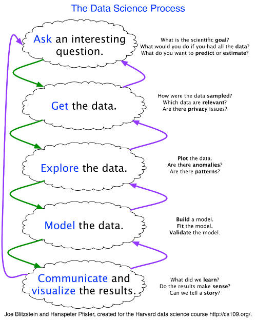

CHAPTER 4 DATA VERIFICATION, SUMMARIZATION AND VISUALIZATION pp. 87 - 96
(4.1) THE MACHINE LEARNING PREDICTIVE MODELING PROCESS p. 88
(4.2) DATA VERIFICATION AND SUMMARIZATION p. 89
R Packages to Install
validate
DATA VERIFCATION, SUMMARIZATION AND VISUALIZATION
The Machine Learning Predictive Modeling Process
Before we begin the discussion on data verification, summarization and visualization, we will review the predictive modeling portion of the machine learning process in more detail than in Chapter 1. In Chapter 1 we showed the figure below

Which can be summarized in the following steps – from https://machinelearningmastery.com/get-started-in-machine-learning-with-r/
Define Problem
Prepare Data
Evaluate Algorithms
Improve Results
Present Results
The essential tasks within this framework under Prepare Data, are the items we will focus on in the in the next several chapters.
Prepare Data
Importing Data
Data Verification
Data Summarization
Data Visualization
Data Cleaning
Feature Selection
Data Transforms
Evaluate Algorithms
Resampling Methods
Evaluation Metrics
Spot-Check Algorithms
Model Selection
Improve Results
Algorithm Tuning
Ensemble Methods
Present Results
Finalize Model
Make New Predictions
Keep in mind this is generally an iterative process as different models as data is cleaned in various ways, different models with different features are run, modified, adjusted, etc.
R has many packages specifically designed to import data from a different sources and different formats so we won’t cover this in detail. Go on-line to the appropriate one for the task at-hand. Also we won’t spend much time with the last item, Present Results, but the key point here is that all the work you have done up until this last item is irrelevant unless you can make some type of prediction or inference.
Data Verification and Summarization
Prepare Data
Importing Data
Data Verification
Data Summarization
Data Visualization
Data Cleaning
Feature Selection
Data Transforms
Evaluate Algorithms
Resampling Methods
Evaluation Metrics
Spot-Check Algorithms
Model Selection
Improve Results
Algorithm Tuning
Ensemble Methods
Present Results
Finalize Model
Make New Predictions
Once we have verified our data, we begin the analysis process by summarizing the data to understand what we are dealing with, and then we use a number of graphical methods to visualize the data to see what trends we can see in the raw data. These steps will provide us with basic information about our data which will then be fed into the next step which is to prepare the data for further processing by our machine learning techniques. These summarization techniques are often referred to as descriptive statistics.
We will now begin this process using R so begin by setting up your working directory (where you will store your R session). Note the # character in R means that everything that follows is a comment not a command. Another note - all the examples in this class will all be written for the Windows OS. Remember the # symbol is used prior to a comment
getwd() # Shows the working directory (wd)
setwd(choose.dir()) # Select the working directory interactively
setwd("C:/myfolder/data") # Changes the wd (format depends on your OS)
setwd("H:\\myfolder\\data") # Changes the wd (format depends on your OS)
dir() # Lists files in the working directory
dir.create("C:/test") # Creates folder ‘test’ in drive ‘c:’
setwd("C:/test") # Changes the working directory to “c:/test”
From here on we will generally assume our data has been placed into a R dataframe data structure. Remember this type of structure can store multiple different types of data, such as categorical and numerical (unlike a vector or matrix). Below is a simple example from Practical Data Science with R by N Zumel 2014 p. 35.
Here is the background on this data set; suppose your goal is to build a model to predict which of your customers don’t have health insurance; perhaps you want to market inexpensive health insurance packages to them. You’ve collected a dataset of customers whose health insurance status you know. You’ve also identified some customer properties that you believe help predict the probability of insurance coverage: age, employment status, income, information about residence and vehicles, and so on. You’ve put all your data into a single data frame called custdata that you’ve input into R. Now you’re ready to start building the model to identify the customers you’re interested in. This code works for Windows OS – note the direction of the slashes / not \ as usual in Windows.
custdata <- read.table("https://raw.githubusercontent.com/WinVector/zmPDSwR/master/Custdata/custdata.tsv",header=T,sep='\t')
If that does not work go to the web site folder containing the data - https://github.com/WinVector/zmPDSwR/tree/master/Custdata and choose custdata.tsv and you can copy and paste the raw data into a text file called custdata.txt and read that into R from your own computer (run the below only if you load the file from your computer and you will need to change the address shown in red below
custdata <- read.table("C:/Users/lstout/…/custdata.txt",header=T,sep='\t')
I also put this data on the class Blackboard labeled as custdata.txt for download and reading into R.
In R verify what type of data structure you have created and then we will explore the data.
is.data.frame(custdata)
[1] TRUE
See https://www.r-bloggers.com/exploratory-data-analysis-useful-r-functions-for-exploring-a-data-frame/ for more information on dataframes.
To obtain the dimensions of the data frame (number of rows first then number of columns) - the output is a vector.
dim(custdata) # rows by columns
[1] 1000 11
dim(custdata)[1] # Number of rows
[1] 1000
dim(custdata)[2] # Number of columns
[1] 1000
Use head() to obtain the first n observations and tail() to obtain the last n observations; by default, n = 6. These are good commands for obtaining an intuitive idea of what the data look like without revealing the entire data set, which could have millions of rows and thousands of columns.
head(custdata, n = 5)
custid sex is.employed income marital.stat health.ins housing.type recent.move num.vehicles age state.of.res
1 2068 F NA 11300 Married TRUE Homeowner free and clear FALSE 2 49 Michigan
2 2073 F NA 0 Married TRUE Rented TRUE 3 40 Florida
3 2848 M TRUE 4500 Never Married FALSE Rented TRUE 3 22 Georgia
4 5641 M TRUE 20000 Never Married FALSE Occupied with no rent FALSE 0 22 New Mexico
5 6369 F TRUE 12000 Never Married TRUE Rented TRUE 1 31 Florida
The names() function will return the column headers.
names(custdata)
[1] "custid" "sex" "is.employed" "income" "marital.stat" "health.ins" "housing.type"
[8] "recent.move" "num.vehicles" "age" "state.of.res"
This fictitious data set was created by the authors of the Practical Data Science with R book and it is used to demonstrate many of the principles of data science. It assumes that data from a large group of people have been collected and the names of the above variables are indicative of the personal information that was gathered, including whether or not the individual has health insurance. This variable is the Y (response) variable and the business goal here is to use all the other variables to try and predict the probability of health insurance coverage so that marketing can target potential customers who do not currently have health insurance that are likely to purchase it.
The str() function returns many useful pieces of information, including the above, and the types of data for each column.
str(custdata)
'data.frame': 1000 obs. of 11 variables:
$ custid : int 2068 2073 2848 5641 6369 8322 8521 12195 14989 15917 ...
$ sex : Factor w/ 2 levels "F","M": 1 1 2 2 1 1 2 2 2 1 ...
$ is.employed : logi NA NA TRUE TRUE TRUE TRUE ...
$ income : int 11300 0 4500 20000 12000 180000 120000 40000 9400 24000 ...
$ marital.stat: Factor w/ 4 levels "Divorced/Separated",..: 2 2 3 3 3 3 3 2 2 1 ...
$ health.ins : logi TRUE TRUE FALSE FALSE TRUE TRUE ...
$ housing.type: Factor w/ 4 levels "Homeowner free and clear",..: 1 4 4 3 4 2 1 4 4 1 ...
$ recent.move : logi FALSE TRUE TRUE FALSE TRUE FALSE ...
$ num.vehicles: int 2 3 3 0 1 1 1 3 2 1 ...
$ age : num 49 40 22 22 31 40 39 48 44 70 ...
$ state.of.res: Factor w/ 50 levels "Alabama","Alaska",..: 22 9 10 31 9 32 12 22 13 33 ...
To obtain all of the allowed categories or levels of a categorical variable, use the levels() function.
levels(custdata$marital.stat)
[1] "Divorced/Separated" "Married" "Never Married" "Widowed"
To obtain all of the unique (duplicated items removed) values of a column variable, use the unique() function
unique(custdata$marital.stat)
[1] Married Never Married Divorced/Separated Widowed
Levels: Divorced/Separated Married Never Married Widowed
Note in this case the results are similar to what you got with the levels() function. The value of unique() is to find out if some row has a value that is not one of the allowed levels due to a data entry error such as a misspelling. It also works on numerical columns (where levels() does not):
unique(custdata$age)
[1] 49.0000 40.0000 22.0000 31.0000 39.0000 48.0000 44.0000 70.0000 46.0000 33.0000 51.0000
[12] 63.0000 35.0000 54.0000 28.0000 36.0000 68.0000 53.0000 58.0000 50.0000 55.0000 72.0000
[23] 66.0000 84.0000 65.0000 67.0000 88.0000 85.0000 78.0000 57.0000 61.0000 34.0000 86.0000
[34] 60.0000 38.0000 29.0000 59.0000 41.0000 75.0000 69.0000 32.0000 42.0000 76.0000 45.0000
[45] 37.0000 82.0000 64.0000 83.0000 43.0000 81.0000 30.0000 56.0000 24.0000 73.0000 62.0000
[56] 47.0000 18.0000 74.0000 93.0000 52.0000 77.0000 137.7000 27.0000 79.0000 26.0000 25.0000
[67] 21.0000 123.0610 80.0000 136.0522 71.0000 23.0000 89.0000 20.0000 146.6802 19.0000 124.8451
[78] 87.0000 0.0000 130.4016 126.7373 113.3372
If you want to see these values sorted use
sort(unique(custdata$age))
[1] 0.0000 18.0000 19.0000 20.0000 21.0000 22.0000 23.0000 24.0000 25.0000 26.0000 27.0000
[12] 28.0000 29.0000 30.0000 31.0000 32.0000 33.0000 34.0000 35.0000 36.0000 37.0000 38.0000
[23] 39.0000 40.0000 41.0000 42.0000 43.0000 44.0000 45.0000 46.0000 47.0000 48.0000 49.0000
[34] 50.0000 51.0000 52.0000 53.0000 54.0000 55.0000 56.0000 57.0000 58.0000 59.0000 60.0000
[45] 61.0000 62.0000 63.0000 64.0000 65.0000 66.0000 67.0000 68.0000 69.0000 70.0000 71.0000
[56] 72.0000 73.0000 74.0000 75.0000 76.0000 77.0000 78.0000 79.0000 80.0000 81.0000 82.0000
[67] 83.0000 84.0000 85.0000 86.0000 87.0000 88.0000 89.0000 93.0000 113.3372 123.0610 124.8451
[78] 126.7373 130.4016 136.0522 137.7000 146.6802
Using this information, you can determine which rows have an invalid entry, e.g., if we want to find which rows had ages > 100 use
which(custdata$age > 100)
[1] 213 267 287 594 626 753 927 954
To see a single row of one of the large age entries use
custdata[213,]
custid sex is.employed income marital.stat health.ins housing.type recent.move num.vehicles age
213 287882 M TRUE 60000 Married TRUE Rented TRUE 2 137.7
state.of.res
213 Florida
To see the entire row of all these large age entries use
custdata[which(custdata$age > 100),]
custid sex is.employed income marital.stat health.ins housing.type recent.move
213 287882 M TRUE 60000 Married TRUE Rented TRUE
267 364991 F NA 12000 Divorced/Separated TRUE Homeowner with mortgage/loan FALSE
287 397230 F TRUE 31200 Married TRUE Rented FALSE
594 843811 F TRUE 40000 Never Married TRUE Homeowner with mortgage/loan FALSE
626 875771 M FALSE 175200 Married TRUE Homeowner with mortgage/loan FALSE
753 1047534 M TRUE 200000 Married TRUE Homeowner with mortgage/loan FALSE
927 1303929 F FALSE 43400 Never Married TRUE Rented FALSE
954 1361012 F NA 255000 Widowed TRUE Homeowner free and clear FALSE
num.vehicles age state.of.res
213 2 137.7000 Florida
267 1 123.0610 Nevada
287 2 136.0522 Texas
594 1 146.6802 Indiana
626 3 124.8451 Arkansas
753 4 130.4016 Washington
927 1 126.7373 West Virginia
954 1 113.3372 Tennessee
You can determine which row has an invalid entry, e.g., if we want to find which rows had NAs for is.employed use
which(is.na(custdata$is.employed))
[1] 1 2 9 11 17 20 30 32 33 35 38 39 40 41 45 47 49 50 51 56 59 65 66 71 73 75
[27] 78 79 82 85 91 97 98 99 103 112 115 116 118 120 124 125 126 129 130 131 132 134 138 139 144 147
[53] 149 152 156 157 158 160 164 169 170 172 173 174 176 178 181 184 189 195 196 197 198 200 201 202 206 209
[79] 214 216 219 226 227 237 238 241 244 250 252 254 256 262 265 267 270 271 272 273 274 275 278 279 280 281
[105] 282 284 291 297 307 308 310 311 312 313 314 320 321 327 331 332 334 336 337 339 345 352 353 354 355 357
[131] 358 361 362 371 372 374 378 379 381 386 388 391 393 396 397 398 399 401 406 407 409 411 414 423 426 428
[157] 431 434 437 439 442 448 449 455 461 465 470 474 478 482 483 486 494 498 501 504 520 522 524 525 530 536
[183] 542 545 549 551 556 558 559 560 561 569 570 571 576 577 578 583 588 595 597 602 616 617 621 631 632 637
[209] 639 647 648 649 651 653 654 655 657 664 667 668 670 672 680 683 687 691 701 702 709 710 711 712 714 716
[235] 717 721 722 723 726 727 739 740 742 746 751 754 759 760 761 769 774 776 779 796 800 802 807 809 810 812
[261] 818 819 823 828 831 832 838 839 840 843 845 846 848 849 855 856 858 859 860 861 864 872 876 877 889 896
[287] 897 900 901 904 906 907 911 913 914 915 916 922 923 929 931 933 934 936 938 940 944 947 949 952 954 955
[313] 956 960 962 963 965 967 970 971 972 977 983 988 994 995 997 999
To find which row has the smallest (largest) numerical value use
custdata[which.min(custdata$income), ]
custid sex is.employed income marital.stat health.ins housing.type recent.move num.vehicles age
692 971703 M FALSE -8700 Married TRUE Homeowner with mortgage/loan FALSE 3 60
state.of.res
692 Oklahoma
Here we see row 692 with an income of -8700
And similarly, the largest income
custdata[which.max(custdata$income), ]
custid sex is.employed income marital.stat health.ins housing.type recent.move num.vehicles age
883 1245887 F TRUE 615000 Married TRUE Homeowner with mortgage/loan FALSE 3 44
state.of.res
883 Pennsylvania
Here we see row 883 with an income of 615000
Using these techniques we can very quickly identify values that could be problems.
Another way to validate your data is to use the validate package. Remember to use a package for the first time, you need to install it from one of R web sites, then load it into your working R environment. In RStudio go to the top row of pull-down menus and select Tools -> Install Packages then in the pop-up window write validate and make sure Install dependencies is checked. You should eventually see the following output
package ‘settings’ successfully unpacked and MD5 sums checked
package ‘validate’ successfully unpacked and MD5 sums checked
The downloaded binary packages are in
C:\Users\... (system dependent)
The above step executes the below R command line and may ask you for a R web site.
install.packages("validate") # This step can be done inside RSTudio -> Tools -> Install Packages
Remember – you only have to install it once, but you must load each package at the beginning of each session prior to its use.
After this all you have to do is to load the package into your environment using library() each time you run a clean-start of R. In R the library is the directory where your packages have been installed. This step can also be done inside RStudio to going over to the bottom right window and selecting the Packages tab then scrolling down the alphabetical list of installed packages and check the box on the left by validate.
library("validate")
To check which packages you have loaded into your R environment use
(.packages() ) # Don’t forget the period in front
[1] "ggplot2" "validate" "stats" "graphics" "grDevices" "utils" "datasets" "methods"
[9] "base"
# This shows what I have loaded – you should see validate at a minimum
Remember, if a package is not loaded you will not be able to use any of its functions.
Now we will use this package to validate our data set. First let’s assume that any income entry below zero or greater than 200,000 is invalid and needs to be flagged and investigated further, deleted, changed to NA or another indicator value.
result.df <- check_that(custdata, income >= 0, income <= 200000)
summary(result.df)
name items passes fails nNA error warning expression
1 V1 1000 999 1 0 FALSE FALSE (income - 0) >= -1e-08
2 V2 1000 967 33 0 FALSE FALSE (income - 2e+05) <= 1e-08
Note we see one unusually low (0 or negative) and 33 high entries. Next we check to see if there are any erroneous entries in is.employed.
result.df2 <- check_that(custdata, is.employed == TRUE, is.employed == FALSE)
summary(result.df2)
rule items passes fails nNA error warning expression
1 V1 1000 599 73 328 FALSE FALSE is.employed == TRUE
2 V2 1000 73 599 328 FALSE FALSE is.employed == FALSE
Here we see that there are 328 rows with no entry and all others are either True or False. The validate package also has a lot more functions that can be used for the data validation process. In the next section we will show how you can use visualizations to validate your data, especially with regards to extreme values.
When applied to a dataframe, the summary() function is essentially applied to each column, and the results for all columns are shown together. For a continuous (numeric) variable like “income”, it returns the minimum, maximum, mean, median, and first and third quartile. If there are any missing values (denoted by “NA”), it would also provide a count for them. For a categorical variable like marital.stat, it returns the levels and the number of data in each level.
summary(custdata)
custid sex is.employed income marital.stat health.ins housing.type
Min. : 2068 F:440 Mode :logical Min. : -8700 Divorced/Separated:155 Mode :logical Homeowner free and clear :157
1st Qu.: 345667 M:560 FALSE:73 1st Qu.: 14600 Married :516 FALSE:159 Homeowner with mortgage/loan:412
Median : 693403 TRUE :599 Median : 35000 Never Married :233 TRUE :841 Occupied with no rent : 11
Mean : 698500 NA's :328 Mean : 53505 Widowed : 96 NA's :0 Rented :364
3rd Qu.:1044606 3rd Qu.: 67000 NA's : 56
Max. :1414286 Max. :615000
recent.move num.vehicles age state.of.res
Mode :logical Min. :0.000 Min. : 0.0 California :100
FALSE:820 1st Qu.:1.000 1st Qu.: 38.0 New York : 71
TRUE :124 Median :2.000 Median : 50.0 Pennsylvania: 70
NA's :56 Mean :1.916 Mean : 51.7 Texas : 56
3rd Qu.:2.000 3rd Qu.: 64.0 Michigan : 52
Max. :6.000 Max. :146.7 Ohio : 51
NA's :56 (Other) :600
Things to look for in this summary to help validate the data;
Look at a column of data to see if it is of the desired type; numerical, logical etc.
Check the min and max values of numerical data to see if they make sense (e.g., look for extreme values or negative values where they don’t belong such as age).
With categorical variables do all the entries make sense (e.g., marital.stat).
Also look for missing values which are indicated with NA’s – how many, which variables have the most, patterns in them that might indicate problems in gathering the data etc.
Here is what we can see with the data;
is.employed missing almost a third of the data
income has at least one negative value
84% of the customers have health.ins
housing.type, recent.move, and num.vehicles are each missing 56 values
The average value for age seems plausible but the min and max values do not
The categorical variable state.of.res reports how many customers are in each state for first few states
Further comments; a few missing values may not really be a problem, but if a particular data field is largely unpopulated, it shouldn’t be used as an input without some repair (discussed later in class). In R, many modeling algorithms will, by default, quietly drop rows with missing values, and the missing values in the is.employed variable could cause R to quietly ignore nearly a third of the data.
Even when a column or variable isn’t missing any values, you still want to check that the values that you do have make sense. Do you have any invalid values or outliers? Examples of invalid values include negative values in what should be a non-negative numeric data field (like age or income), or text where you expect numbers. Outliers are data points that fall well out of the range of where you expect the data to be.
Negative values for income could indicate bad data. They might also have a special meaning, like “amount of debt.”
Either way, you should check how prevalent the issue is, and decide what to do: Do you drop the data with negative income? Do you convert negative values to zero?
Customers of age zero, or customers of an age greater than about 110 are outliers. They fall out of the range of expected customer values. Outliers could be data input errors. They could be special sentinel values: zero might mean “age unknown” or “refuse to state.” And some of your customers might be especially long-lived.
You also want to pay attention to how much the values in the data vary. If you believe that age or income helps to predict the probability of health insurance coverage, then you should make sure there is enough variation in the age and income of your customers for you to see the relationships. Even ignoring negative income, the income variable ranges from zero to over half a million dollars. That’s pretty wide (though typical for income). Data that ranges over several orders of magnitude like this can be a problem for some modeling methods. We’ll talk about mitigating data range issues when we talk about transformations later. Data can be too narrow, too. Suppose all your customers are between the ages of 50 and 55. It’s a good bet that age range wouldn’t be a very good predictor of the probability of health insurance coverage for that population, since it doesn’t vary much at all.
One factor that determines apparent data range is the unit of measurement. To take a nontechnical example, we measure the ages of babies and toddlers in weeks or in months, because developmental changes happen at that time scale for very young children. Suppose we measured babies’ ages in years. It might appear numerically that there isn’t much difference between a one-year-old and a two-year-old. In reality, there’s a dramatic difference with respect to development, as any parent can tell you! Units can present potential issues in a dataset for another reason, as well. You will want to ensure that consistent units were used throughout the data gathering process.
We will now look at data visualization techniques to help us analyze the raw data.
END CHAPTER 4